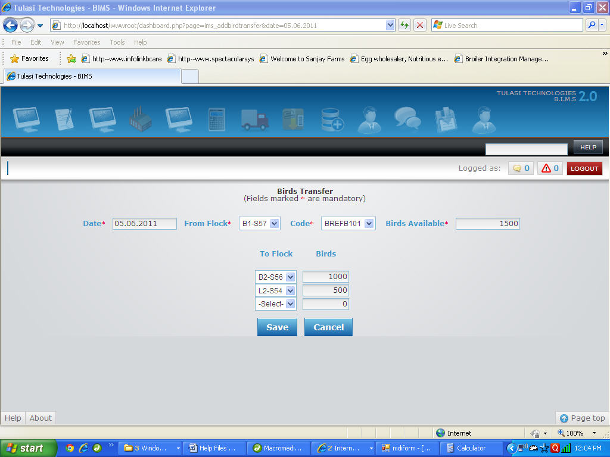
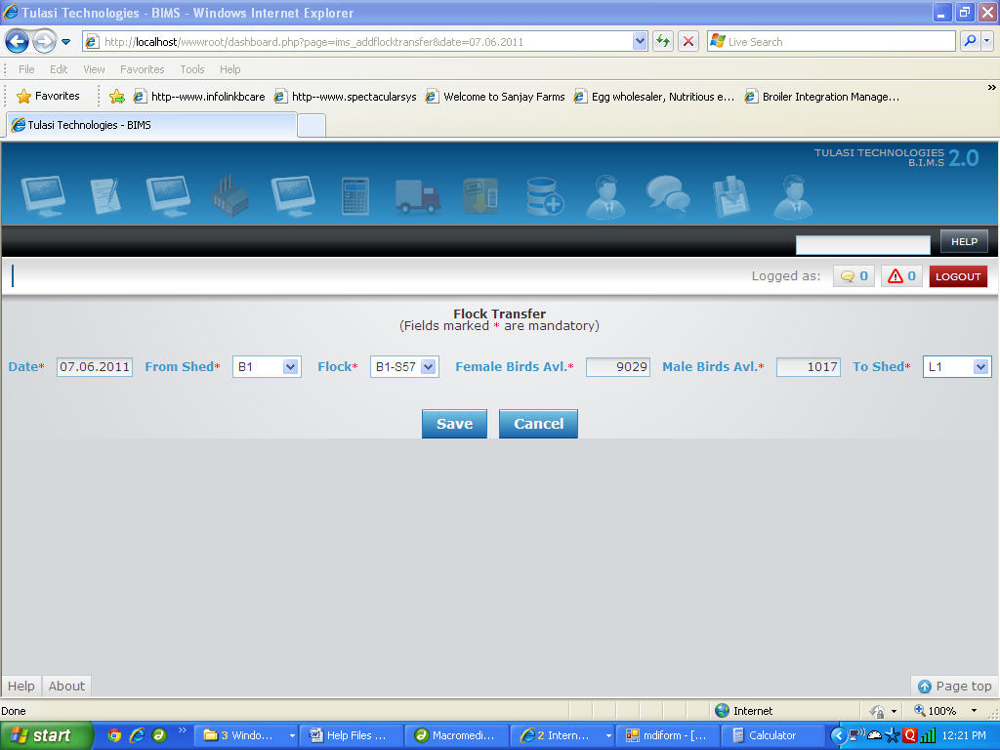

Processing
Add New Birds Transfer
To Add a New Birds Transfer
- Select Values for "(Transfer)Date", "From Flock" and "Code".
As and when the value for Code is selected the value of "Birds Available" will be displayed automatically. You can also change the value of Birds Available manually by entering the required value in the given input box. - Now select the value for "To Flock" and enter value for "Birds(Transfered)".
- Repeat above step 2 until you fill all the details of birds transfered from the flock.
- Now Click on "Save" button to save the Transfer of Birds or "Cancel" to exit with out saving the Transfer of Birds.
Eg : Suppose if you want to transfer 1000 birds from flock "B1-S57" to "B2-S56" and 500 birds from flock "B1-S57" to "L2-S54" on "5th June, 2011" then
You have to select 05.06.2011 for "Date", B1-S57 for "From Flock".
Now select B2-S56 for "To Flock", enter 1000 for "Birds", select B2-S56 for "To Flock" and enter 500 for "Birds".

Add New Flock Transfer
To Add a New Flock Transfer
- Select Values for "(Transfer)Date", "From Shed", "Flock".
As and when the value for Flock is selected the value of "Female Birds Avl" and "Male Birds Avl" will be displayed automatically. - Now enter the value for "To Shed". Eg : Suppose if you want to transfer flock "B1-S57" from Shed "B1" to Shed "L1" on "7th June, 2011" then
- Now Click on "Save" button to save the Transfer of Flock or "Cancel" to exit with out saving the Transfer of Flock.
You have to select 07.06.2011 for "Date", B1 for "From Shed" and B1-S57 for "Flock".
As and when you select value for Flock the values of "Female Birds Avl." and "Male Birds Avl." will be displayed automatically.
Now select L1 for "To Shed".

Quail Birds Sending
Add Quail Birds Sending
- You have to select date,Processing Unit and Farm. Eg :Suppose the Date is "23.04.2012" you have to select 23.04.2012 for "Date",Processing Unit for "Processing Unit" and Farm1 for "farm".
- You have to Enter DcNumber,Driver and Vehicle Number.
Eg :Suppose the DcNumber is "1562" you have to enter 1562 for "DcNo",Karan for "Driver",KA123HR7 for "Vehicle Number". - You have to select Unit,House,Flock and Category.
Eg :Suppose the unit is "U1",House is "S1",Flock is "U1-S1-F1" and category is "Quail Female Birds" you have to select U1 for "Unit",S1 for "House",U1-S1-F1 for "Flock" and Quail Female Birds for "Category". - You have to enter number of birds.
Eg :Suppose if birds are "200" you have to enter 200 for "Birds". - You have to enter weight.
Eg :Suppose if weight is "400" you have to enter 400 for "Weight". - You have to enter Price.
Eg :Suppose if price is "1250.50" you have to enter 1250.50 for "Price". - You have to enter Mortality.
Eg :Suppose if mortality is "10" you have to enter 10 for "Mortality". - If any remarks write in remarks textbox

- Once filled click "SAVE" button to Save the Birds Sending or click "CANCEL" button to exit without Saving the Birds Sending.